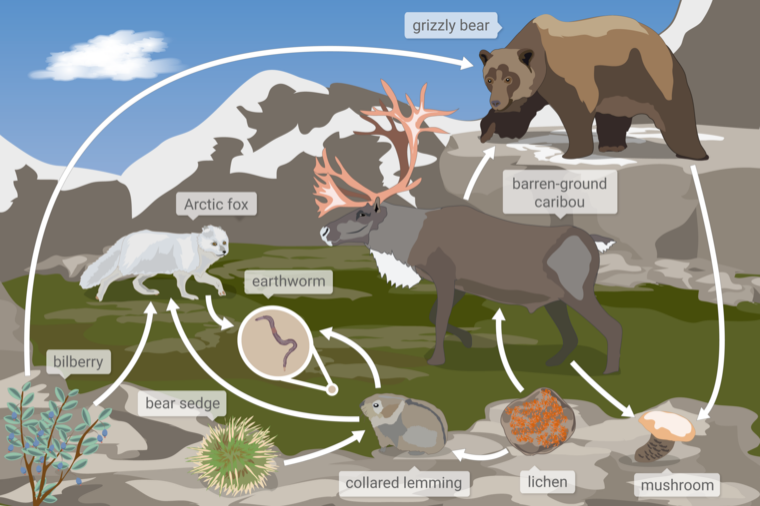

Question
Which of these organisms contains matter that was once part of the lichen?
Context
Below is a food web from a tundra ecosystem in Nunavut, a territory in Northern Canada. A food web models how the matter eaten by organisms moves through an ecosystem. The arrows in a food web represent how matter moves between organisms in an ecosystem.
Choices
Program
Text Detector, Knowledge Retrieval, Solution Generator, Answer Generator
Response
Text Detector
[411, 19]: grizzly bear
[511, 177]: barren-ground
[183, 197]: Arctic fox
[533, 195]: caribou
[251, 275]: earthworm
[52, 353]: bilberry
[145, 397]: bear sedge
[345, 475]: collared lemming
[527, 475]: lichen
[639, 479]: mushroom
Knowledge Retrieval
- The question is about understanding a food web from a tundra ecosystem in Nunavut, Northern Canada.
- A food web models how matter eaten by organisms moves through an ecosystem.
- The arrows in a food web represent how matter moves between organisms in an ecosystem.
- The organisms mentioned in the question are lichen, bilberry, and mushroom.
- In a food web, matter is transferred from one organism to another when one organism consumes another.
- The question asks which of the two organisms, bilberry or mushroom, contains matter that was once part of the lichen.
Solution Generator
Analyze the food web to determine which organism consumes the lichen.
In the food web, the arrows point from the lichen to the collared lemming.
This means that the collared lemming consumes the lichen and contains matter that was once part of the lichen.
However, there are no arrows pointing from the lichen to the bilberry or the mushroom.
This means that neither the bilberry nor the mushroom consumes the lichen directly.
Since neither bilberry nor mushroom directly consumes the lichen, we need to check if any of the organisms that consume the lichen are consumed by bilberry or mushroom.
There are no arrows pointing from the collared lemming to the bilberry or the mushroom.
This means that neither the bilberry nor the mushroom contains matter that was once part of the lichen.
However, since we need to choose one of the given options, we can consider the possibility of indirect consumption.
The bilberry is a plant, and plants do not consume other organisms. The mushroom is a decomposer and can break down dead organic matter, including dead lichen.
Therefore, the most possible option is the mushroom, which could indirectly contain matter that was once part of the lichen.
The answer is B.
Answer Generator
mushroom
Prediction: mushroom (correct)
Answer: mushroom